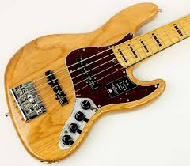

Anti UX
Bass:

THE DOUBLE BASS WAS INVENTED IN THE FIFTEENTH CENTURY.IT IS A LARGE STRINGED INSTRUMENT THAT PRODUCES SOUND BY BEING BOWED BY THE PERFORMER. THE STRINGS VIBRATE THE WOODEN BODY OF THE INSTRUMENT AND THE WOODEN BODY HELPS VIBRATE THE AIR AROUND THE INSTRUMENT TO PRODUCE SOUND WAVES THAT WE CAN HEAR OR FEEL. IT WAS CREATED TO ADD LOW END SOUNDS THAT THE ORCHESTRA COULD NOT PRODUCE. THE ELECTRIC BASS GUITAR WAS INVENTED IN THE 1930S, FOLLOWING THE INVENTION OF THE ELECTRIC GUITAR PICKUP. MODERN COMPETEING BASS GUITAR COMPANIES INCLUDE FENDER, GIBSON, AND WARWICK.